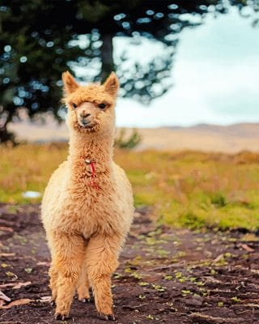

Jeg hedder Matilde Nielsen og går på Rysensteen Gymnasium i 2021y, som er linjen almen science med matA, fysikB og kemiB.
Derudover har jeg valgfaget informatik, hvor vi har været gennem følgende emner:
- Webteknologi
Basalt om mig
Jeg er 17 år og bor på Østerbro. Jeg har fødselsdag den 8. marts og mit yndlingsdyr er en lama:
